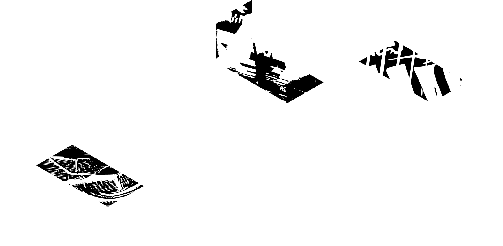

DEGREE SHOW 2026
В рамках проекта я разработала айдентику для песни “United in Grief” Kendrick Lamar, основанную на идее визуализации звука через абстрактные формы. Главной задачей было передать настроение и динамику трека не через буквальные образы, а через цвет, движение и композицию.
01
Главное УТП и слоган британки - рушит правила, учит новому мышлению “think out the box”
02
Как университет дает фундамент и задает направление в будущее
03
Гармонично объединяет огромное количество разных людей и их интересов вместе



01 паттерн направлений
02 фундамент
03 изометрическая сетка